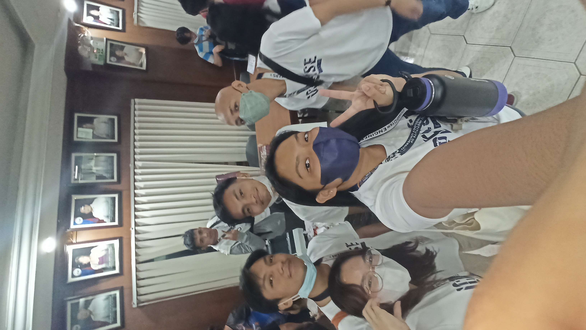
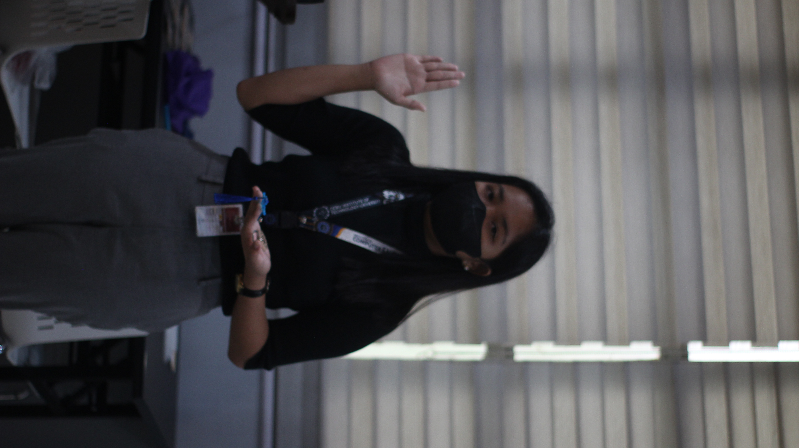

Institute of Computer Engineers of the Philippines Student Edition - CIT University Chapter
Secretary for Internal Affairs
I was a member of the Information Committee for A.Y. 2022 - 2023 and was awarded as the Most Outstanding Committee Member for the 3rd Administration. I served as the Secretary for Internal Affairs as well as the Head of the Information Committee under the 4th Administration from June 2023 until August 2023.

